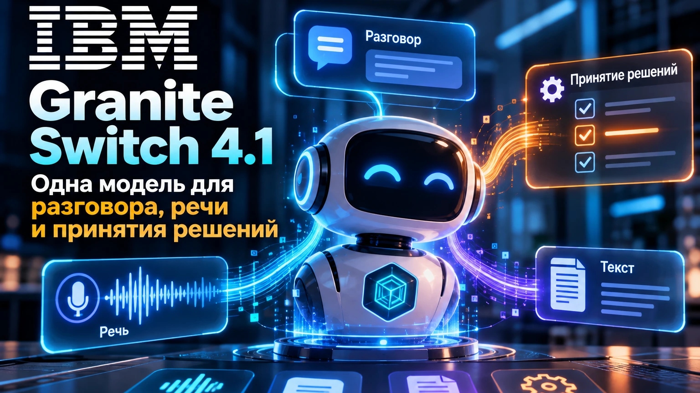

Инструменты для ИИ-агентов, голосовые модели и исследования IBM.
ИИ-агенты получают всё больше самостоятельности. 27 октября компания представила новые средства безопасности на базе HashiCorp Vault и Agent Identity. Теперь каждому корпоративному агенту можно назначить собственную цифровую личность: указать владельца, разрешённые действия и
Отправлять запись рабочего совещания на чужой сервер, чтобы получить расшифровку, никому не хочется. Особенно если на записи обсуждают зарплаты, контракты или очередной гениальный план руководства. IBM предлагает обойтись собственным компьютером. — обновлённое семейство

IBM представила Granite Switch 4.1 — открытое семейство моделей на 8 и 30 миллиардов